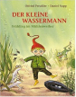

Der kleine Wassermann: Fruhling im Muhlenweiher (Abenteuer im Muhlenweiher, #1)

Книга "Der Wandel des Kindheitsbildes. Ottfried Preu?lers „Der kleine Wassermann" und Christine Nostlingers „Wir pfeifen auf den Gurkenkonig"". Studienarbeit aus dem Jahr 2008 im Fachbereich Germanistik - Gattungen, Note: 2,0, Johann Wolfgang Goethe-Universitat Frankfurt am Main, Sprache: Deutsch, Abstract: Fur die Kinder- und Jugendliteratur des deutschsprachigen Raums beginnt um 1970 eine neue Ara. Die Studentenrevolte von 1968 gegen die etablierte Wertewelt der deutschen Gesellschaft bewirkt eine Wandlung des Kinder- und Familienbildes. Vor diesem Hintergrund der neuen Erziehungskonzepte will die so genannte "antiautoritare Kinderliteratur" (ca. 1968-1972) ihre jungen Leser zu Denkprozessen und zur Entwicklung kritischer Ideen anregen. Die Kinder werden aus den Freiraumen ihrer Spielwelten zuruckgeholt und in die Normenwelt der Erwachsenen eingefuhrt. Eltern nehmen ihre jungen Fami